8 月 13 日，DeepSeek Harness 团队发布了 Harness v0.1 开发者预览版，并开放源代码。Mac 和 Windows 的启动命令相同：
npx @deepseek-ai/dsh web
这条命令启动的是本地 Web UI，默认地址是 http://127.0.0.1:3080。运行前需要安装 Node.js，进入页面后还要配置 DeepSeek API Key 和工作区。
本文分两部分：Mac、Windows 的启动步骤，以及我用两套自制 Skill 做的一次测试。内容对应当前预览版，后续版本的界面和命令可能调整。
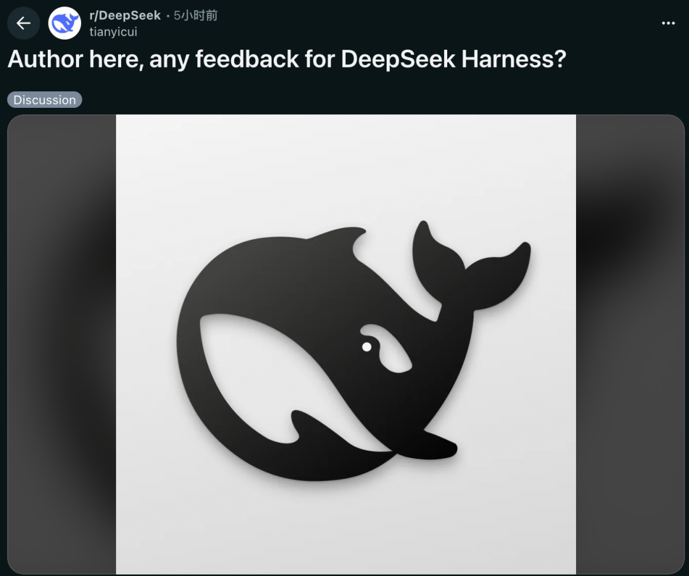
》使用前准备
准备以下内容：
- 一台 Mac 或 Windows 电脑；
- Safari、Chrome 或 Edge 等浏览器；
- Node.js。官方仓库目前要求 Node.js 22.19.0 及以上的 22.x，或 24.0.0 及以上。下文使用 Node.js 24 LTS；
- 一个 DeepSeek API Key。调用模型时，DeepSeek 开放平台账号需要有可用余额。
Node.js 官方下载地址：https://nodejs.org/en/download
DeepSeek API Key ：https://platform.deepseek.com/api_keys
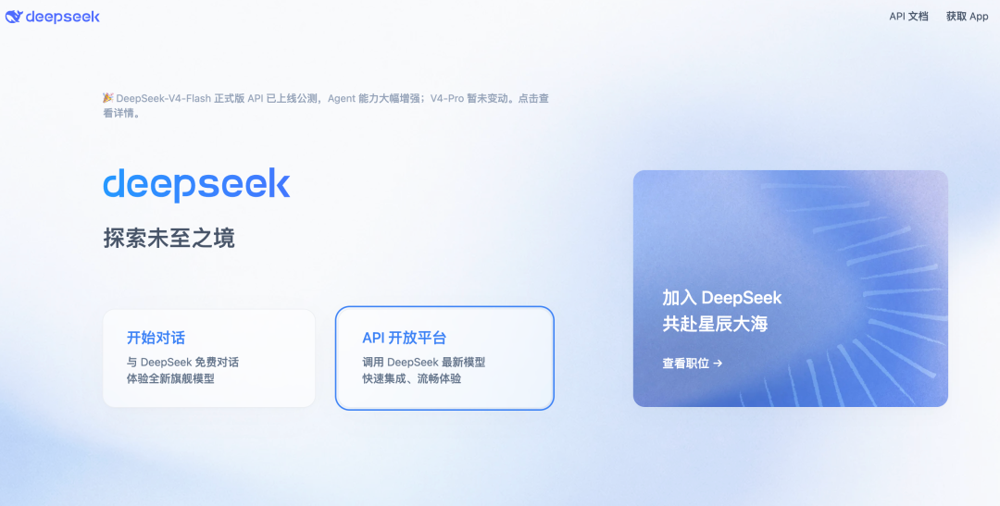
这里赞美一下梁圣，DeepSeek API便宜大碗，怎么用都不心疼，推荐小白试用无脑选DeepSeek API Key，从十块钱用起
》Mac 启动步骤
第一步：安装 Node.js
进入 Node.js 官网，下载并安装 Node.js 24 LTS。安装完成后，关闭原来的终端窗口，再重新打开“终端”。
打开终端：按 Command + 空格，搜索“终端”或“Terminal”。
依次输入下面两条命令，检查是否安装成功：
node -v
npm -v
如果第一条显示 v24.x.x，就可以继续。
第二步：启动 Web UI
继续在终端输入：
npx @deepseek-ai/dsh web
第一次运行时，npx 会下载所需软件包，稍微等一会，就会看到终端询问是否继续，输入 “y” 并回车。
启动成功后，终端会打印访问地址，默认是：
http://127.0.0.1:3080
如果浏览器没有自动打开，就把终端显示的地址复制到 Safari、Chrome 或 Edge。Web UI 运行期间，终端窗口需要保持打开；停止服务时，回到终端按 Control + C。
》Windows 启动步骤
第一步：安装 Node.js
进入 Node.js 官网，下载并安装 Node.js 24 LTS。安装完成后，关闭原来的 PowerShell 或 Windows Terminal，再重新打开。
从开始菜单打开“终端”或“PowerShell”，无需管理员权限。
依次输入：
node -v
npm -v
如果第一条显示 v24.x.x，说明 Node.js 已安装成功。
第二步：启动 Web UI
输入：
npx @deepseek-ai/dsh web
首次下载时，如询问是否继续，输入 y 并回车。启动后，在 Edge 或 Chrome 中打开终端打印的地址；默认也是：
http://127.0.0.1:3080
如果 PowerShell 提示“禁止运行脚本”或 npx.ps1 无法加载，不必修改整台电脑的执行策略，改用：
npx.cmd @deepseek-ai/dsh web
使用期间要保留终端窗口。停止服务时，回到终端按 Ctrl + C。
》进入网页后完成两项配置
1. 配置 DeepSeek API Key
进入 Web UI 后，打开：
设置 → 模型 → DeepSeek
粘贴 DeepSeek API Key，然后保存。保存后无需重启服务。
--Agent预设功能--
Agent预设功能带有4种模式：
- 标准模式：包含文件、Shell、检索、Skill、计划和子 Agent 等工具；
- PTC 模式：让模型生成代码，组合多轮工具调用；
- 极简模式：仅保留一个 Shell 工具与一个文件编辑工具，用于最小环境下的模型基准测试；
- 创造模式：用于检查运行时、试验 Cordis 插件和组合新模式。
初次使用可以先选标准模式。
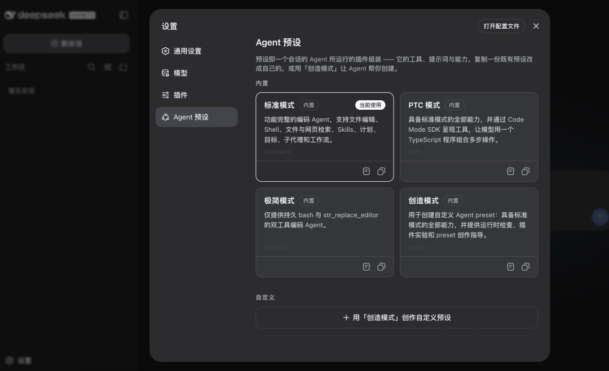
--第一条任务这样发--
从只读任务开始：
请先查看当前工作区，不要修改或删除任何文件。告诉我这里有哪些内容，以及你下一步可以帮助我做什么。
确认运行正常后，再尝试：
请在当前工作区创建一个 README.md，写明这是 DeepSeek Harness 测试目录。执行前先告诉我计划，完成后列出你修改的文件。
页面会列出待审批的命令或文件修改，确认内容后再批准。
--用两套自制 Skill 做了一次测试--
我直接在工作区选择了本地文件夹进行测试，想看看它能不能区分两个相似Skill的区别，以及调用Skill去完成任务的交互流程有没有变化
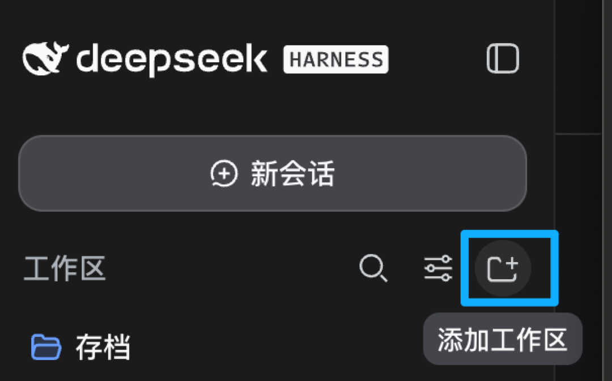
先说结论：比较明显的是流程更顺，还不能说整体速度更快
第一条指令是：
查看这个文件夹里的 Skill。
Harness 先列出工作区内容，再读取两套 Skill 的说明和存档文件，最后整理了两者的名称、用途和差异。
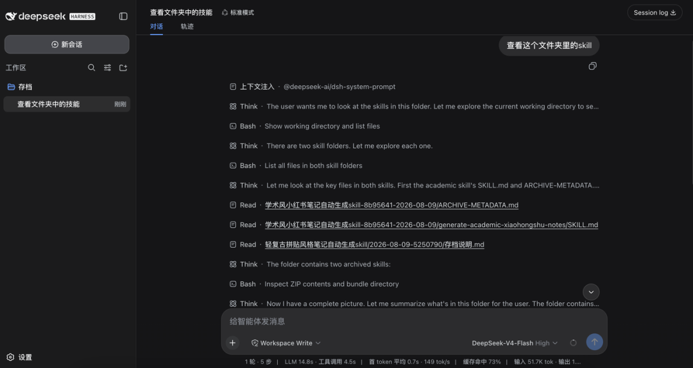
接着我让它生成小红书文案：
你能帮我按照这俩 Skill 的风格，生成我去发小红书的文案吗？
它先问主题、视觉风格和产出范围。

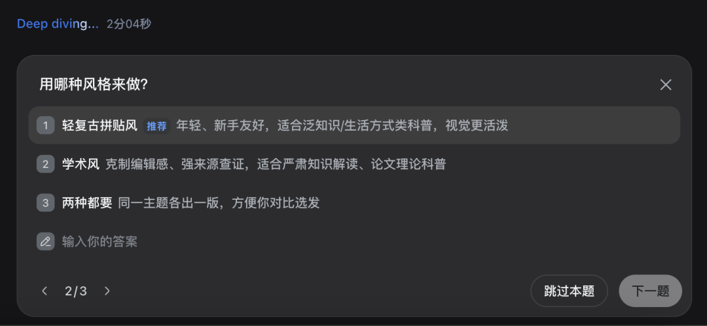
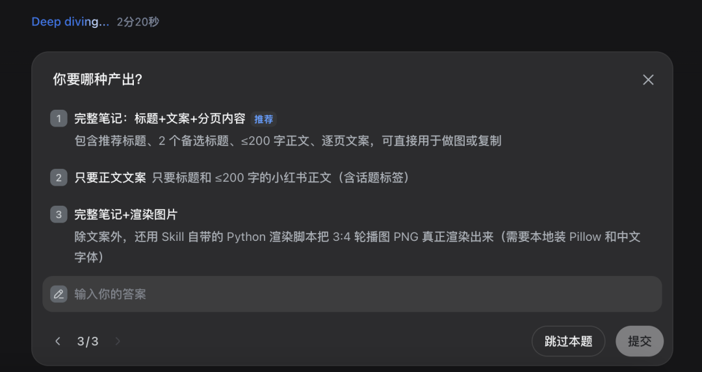
这三个问题来自 Skill 中设定的流程，页面用选择题呈现，也支持自己输入答案。夸一下体验不错。
核对资料时，它读取原来的本机路径失败，随后改用公开仓库，并提示其中一套 Skill 已迁移仓库。仓库地址和引用内容还要单独检查。
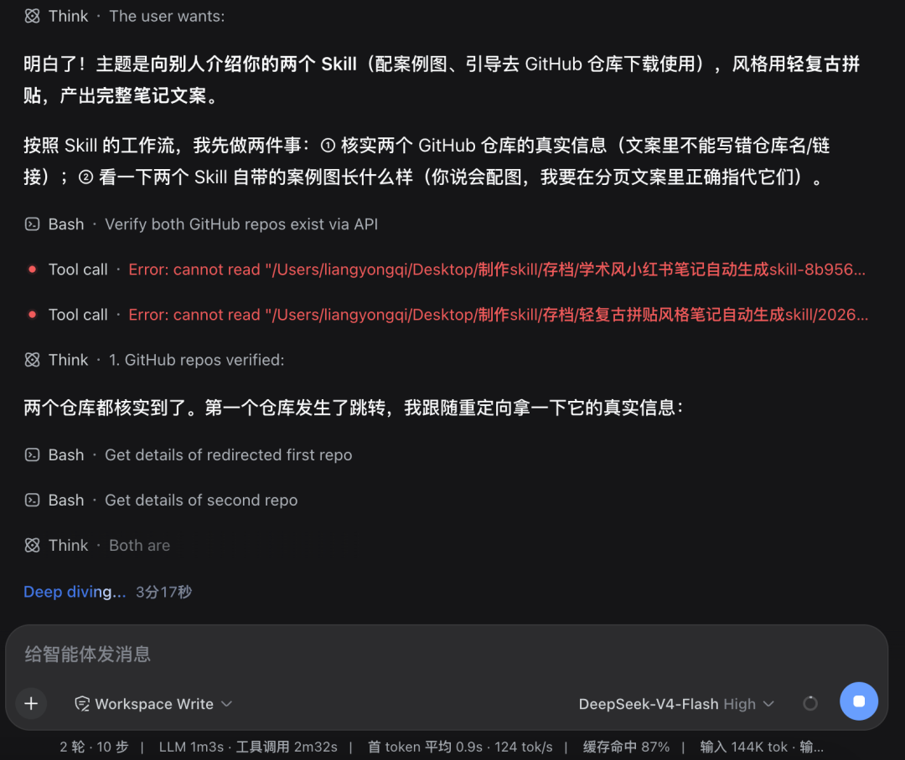
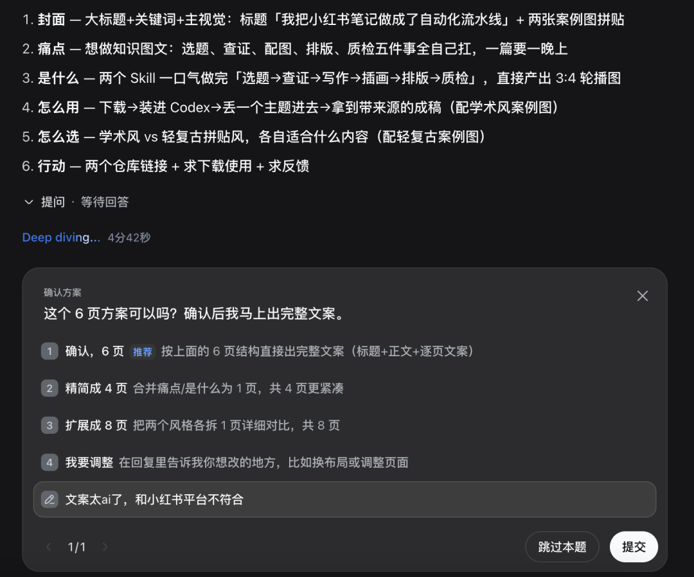
第一版文案我没有采用，反馈是：“文案太 AI 了，和小红书平台不符合。”它保留 6 页结构，重新改成短句和个人口吻，并删掉“赋能”“一站式”“流水线”等表达。第二版更接近我想要的小红书语气，但发布前还得自己再改。
之后我故意测试它，能否接收账号和配图并自动发布。给了我教科书式的回复：先判断需求可行性，不能做的话先解释原因再附上多种解决方案。直接通过选项的方式去引导用户做下一步动作。
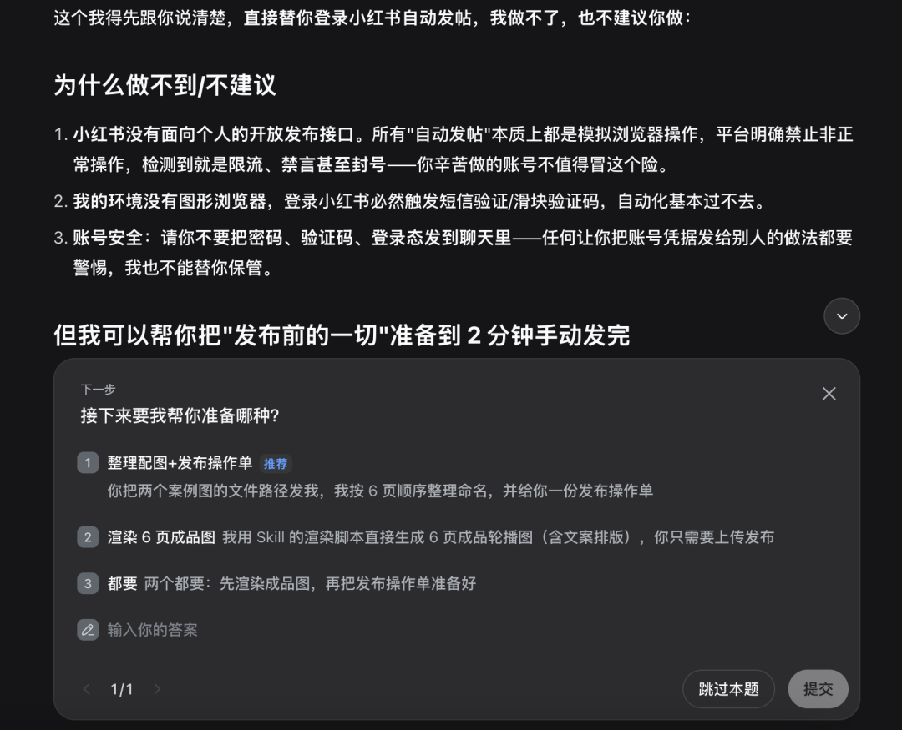
谁能不选“都要”？
随后，Harness 把任务分成 6 步：解压轻复古 Skill，读取项目结构和示例 JSON，检查渲染脚本，生成素材预处理脚本，写入项目配置，最后渲染、校验并生成联系表。
期间每完成一步，输出一句话总结，结果阶段性可视化。
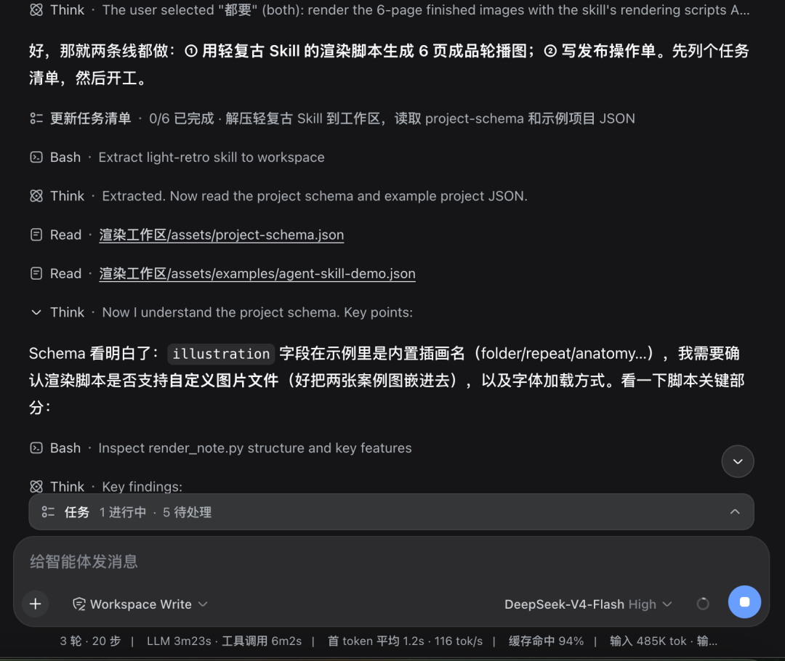
这次生成了 6 张 1080 × 1440、比例为 3:4 的轮播图，脚本也完成了几何检查。工作区里还有一份发布操作单，包含推荐标题、两个备选标题、132 字正文、图片顺序和人工发布步骤。项目 JSON 和素材脚本也保留在工作区，可以用于重新渲染。
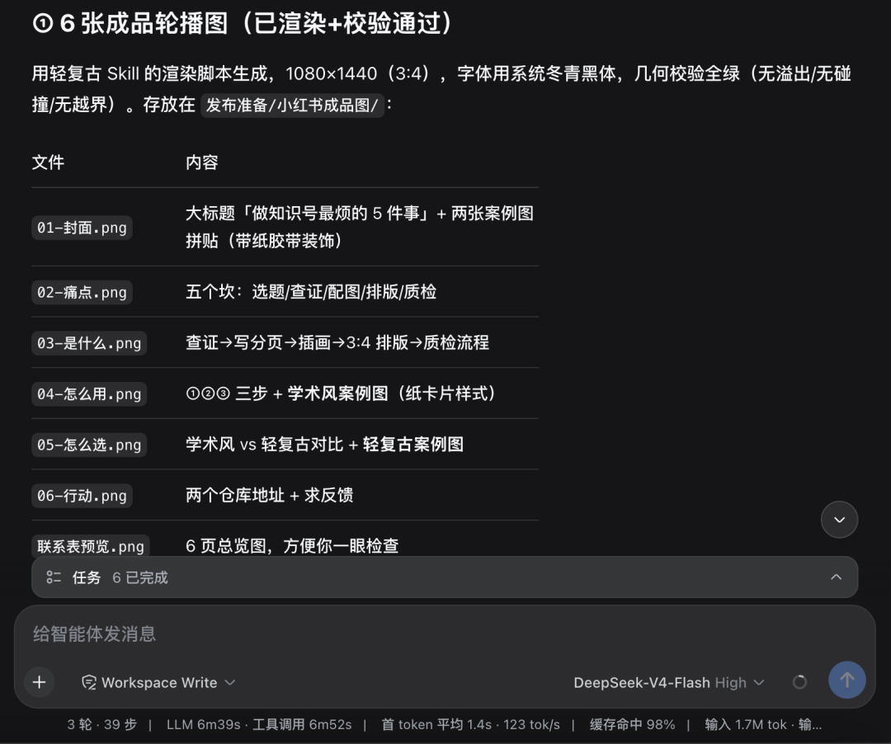
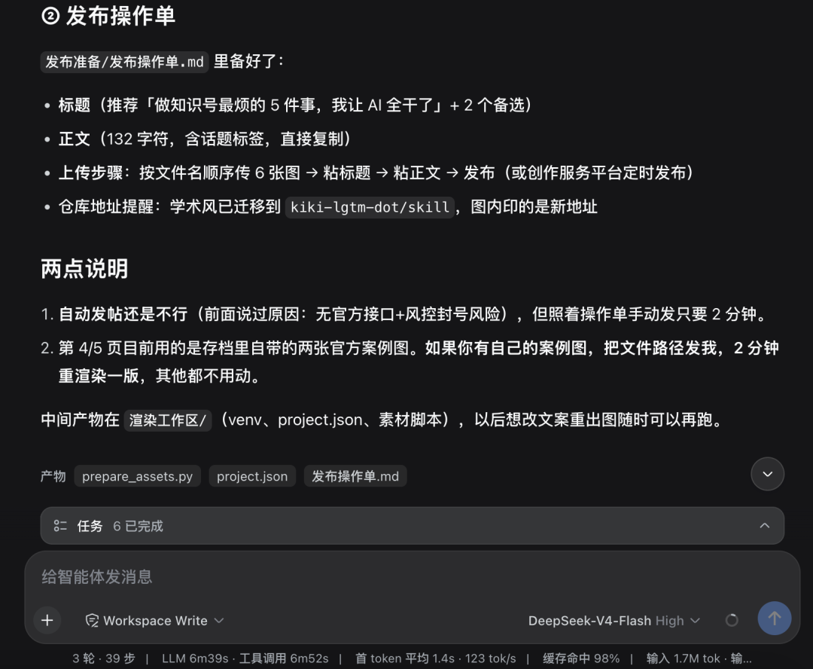
这次两套 Skill 都跑了起来，读取说明、调用脚本和生成文件都能完成。其他 Skill 是否能用，还要看各自的依赖和脚本。
最后在桌面的文件夹内找到这些输出文件，自己收拾收拾发到小红书就完成了。
》这次用下来，我的结论
从这次测试看，比较明显的是流程更顺，模型反应速度方面区别不大。
从读取 Skill 到生成文件，都在同一个任务里完成。它会补充问题、检查文件、运行脚本、处理报错，再把 PNG 和发布操作单写进工作区。
虽然第一版文案仍然返工，仓库地址和内容也需要我检查。所以这次体验上的提升，主要是少了工具切换和手动转交。
界面方面，这次长任务也更容易看。深度思考步骤改为左右滑动，工具调用和思考步骤排在同一行，少了一些上下翻找。这是我的使用感受，不是性能数据。
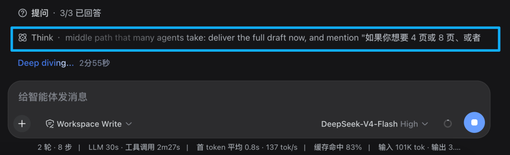
发布当天的公开反馈也有类似情况。
一位用它生成MTV分镜脚本的用户说，重复检查少了，很多任务能按要求一次完成；另一位用户认可 Web UI 和 Code mode，但也提到子 Agent 仍会报错。这些都是个人体验，目前样本还很少。
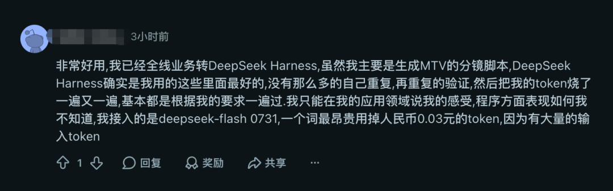
速度方面，官方仓库的 [BENCHMARK.md] 只有测试运行方法，没有公布 Harness 与其他工具的耗时对比。有一份独立测试把同一个 DeepSeek V4 Flash 放进 Pi、OpenCode、Claude Code 和 Nanocoder，处理同一组任务时，平均耗时从 2.1 分钟到 8.0 分钟，输出 Token 也相差较大。这说明 Harness 会影响任务耗时和调用过程，但该测试没有包含这次发布的 DeepSeek Harness，不能拿来证明它更快。
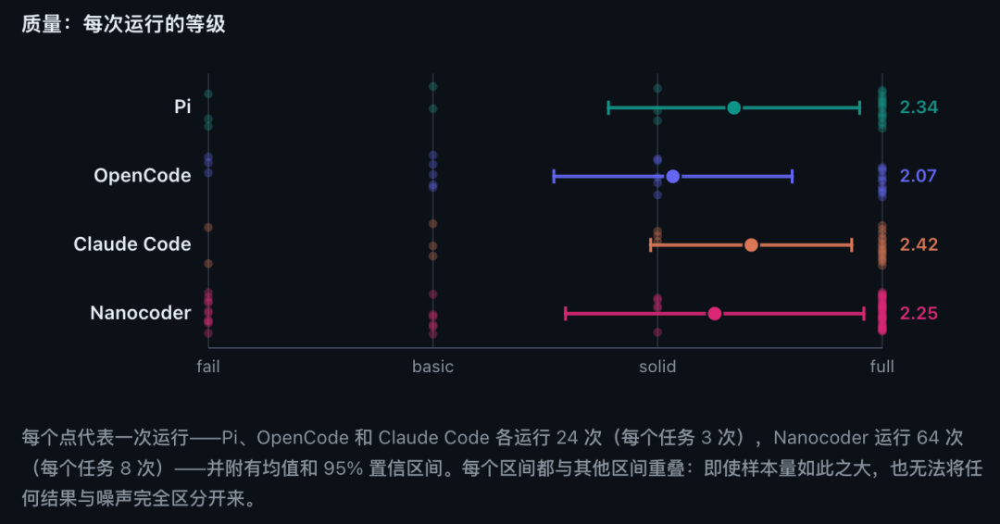
当前版本也有一些早期问题。GitHub 讨论中已经有人报告 [Windows 中文路径选择异常]、[个别 macOS 与 Node 组合启动卡住]，以及[子任务失败后工作流结束]。
我的结论是：操作步骤减少了，体验更丝滑，一个任务里能连续完成读取 Skill、调用脚本和保存文件；是否更快、更稳定，还要等更多同条件测试。
期待接下来的插件生态建设。
》常见问题
Q：输入 node -v 没有结果，或提示命令不存在
A：Node.js 没有安装成功，或者安装后终端没有重开。重新安装 Node.js 24 LTS，再关闭并重新打开终端。
Q：出现 EBADENGINE 或版本不兼容
A：通常是 Node.js 太旧。升级到 Node.js 24 LTS，再重新执行启动命令。
Q：网页输入框是灰色的
A：先完成 API Key 配置，再点击“选择工作区”并选中一个目录。选中后，输入框才会启用。
Q：关闭网页后还能继续吗
A：只要终端里的 dsh 进程仍在运行，就可以再次打开终端打印的本机地址。关闭终端或按 Ctrl + C 后，本地 Web 服务会停止。
Q：提示 3080 端口已被占用
A：换一个端口重新启动，例如：
npx @deepseek-ai/dsh web --port 3081
然后打开终端打印的新地址。
Q：模型是否在本地运行？
A：Web UI 与 Agent 进程运行在本机，模型只通过 API 调用。
--使用提醒--
当前是 v0.1 开发者预览版，后续版本可能调整命令、界面或配置方式。
默认服务只监听 127.0.0.1。如果要开放到局域网或公网，需要另外配置访问控制。
参考资料
- [DeepSeek Harness 发布文章]
- [DeepSeek Harness 官方仓库]
- [官方中文 Web UI 指南]
- [官方中文模型配置指南]
- [Node.js 官方下载]
- [DeepSeek API Key 管理页]
- [DeepSeek API 价格说明]